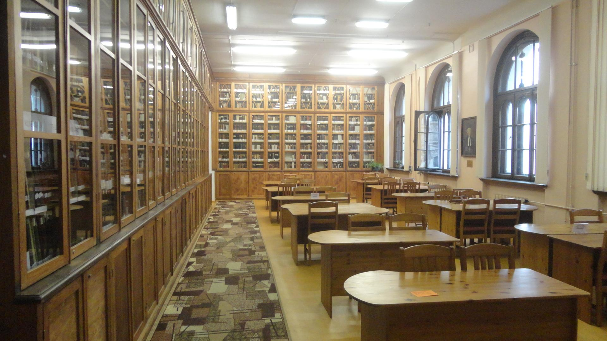
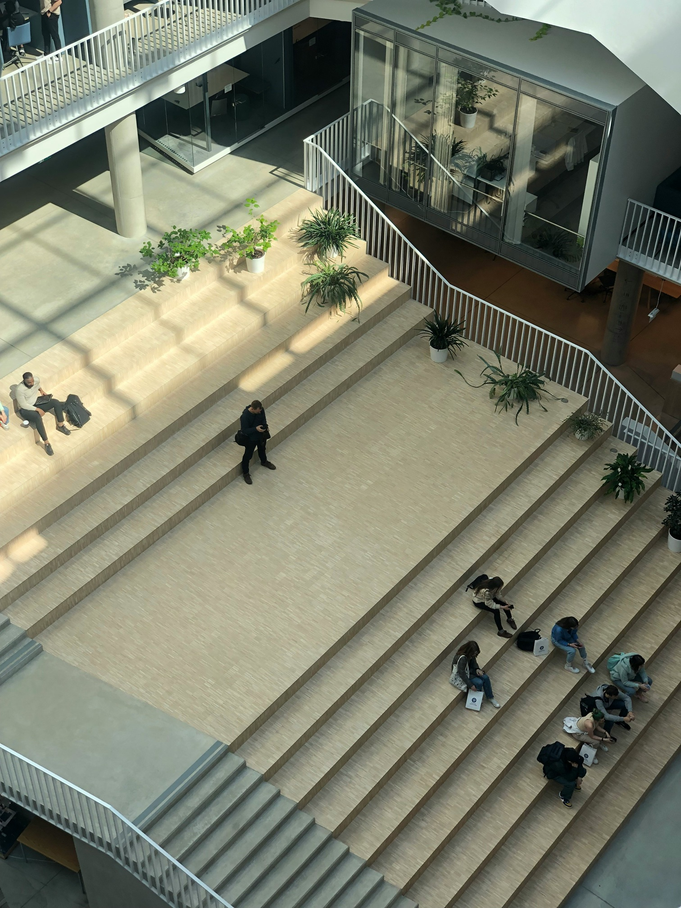

Vietas, kur studēt iekš LU:
LU bibliotēka Raiņa bulvārī
Šī bibliotēka piedāvā klusumu, ērtus galdus un plašu akadēmisko literatūru.
DF atpūtas zona
LU Datorikas fakultātē atrodas ērta un moderni iekārtota atpūtas zona ar dīvāniem.
Botāniskais dārzs
Ja nepieciešams iedvesmojošs pārtraukums vai mācības svaigā gaisā, LU Botāniskais dārzs ir ideāla vieta.
Zinātņu mājas 6. stāva terase
Šī terase ir viena no noslēptākajām LU vietām ar lielisku skatu un mieru.
LU kafejnīca
Kafejnīca piedāvā ne tikai ēdienu, bet arī brīvu atmosfēru studentiem.